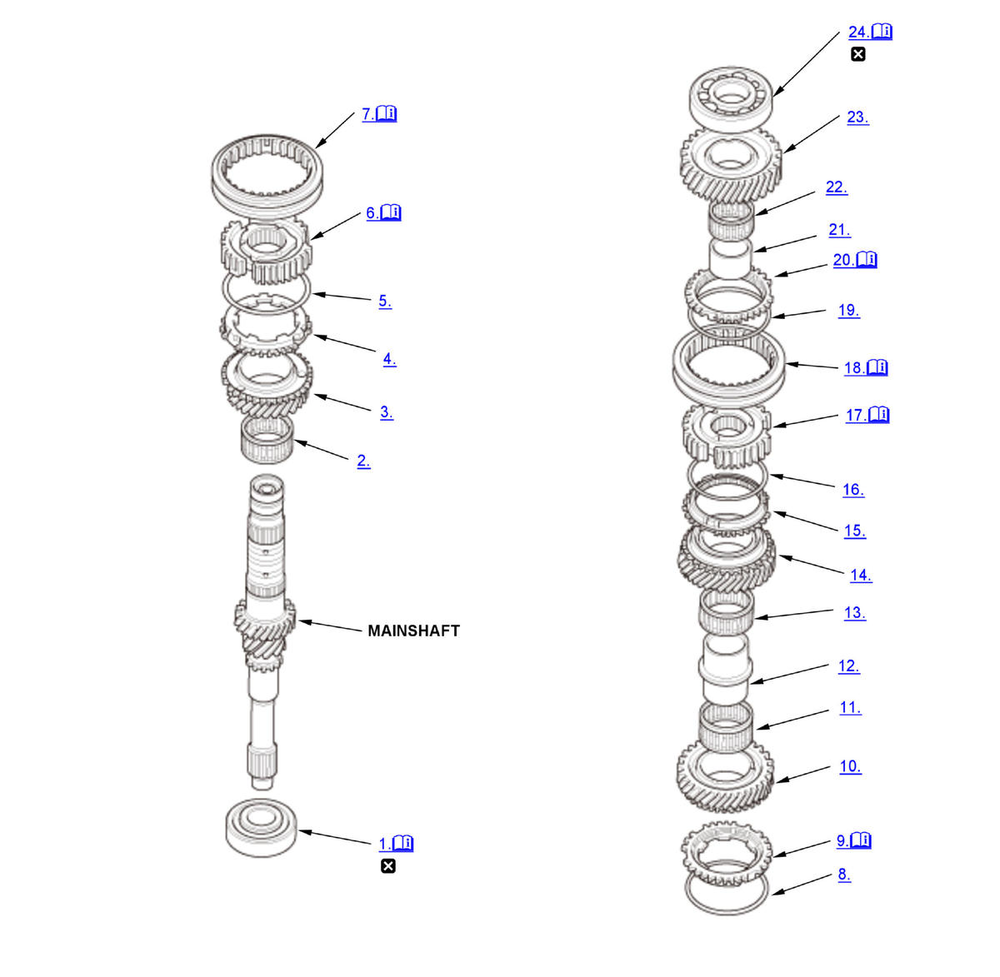

Mainshaft Disassembly, Reassembly, and Inspection (Except K20C1 (M/T)): Reassembly: Procedure
WARNING: This page is about a different variant/trim than selected.
NOTE:
Numbered call-outs in figure pertain to list numbers in following procedure.

Courtesy of HONDA, U.S.A., INC. |
Detailed information, notes, and precautions |
 |
Replace |
- Angular Ball Bearing - Install
1. Press in the angular ball bearing (A) using the 30 mm I.D. driver and a press (B).
NOTE: Check the ball bearing install direction. - Needle Bearing - Install
- 3rd Gear - Install
- Synchro Ring - Install
- Synchro Spring - Install
- 3rd/4th Synchro Hub - Install
1. Install the 3rd/4th synchro hub (A) by aligning the synchro ring fingers (B) with the grooves (C) in the 3rd/4th synchro hub.
NOTE: Make sure to install the 3rd/4th synchro hub in the direction shown.2. Press on the 3rd/4th synchro hub (A) using the 40 mm I.D. driver handle and a press (B). - 3rd/4th Synchro Sleeve - Install
1. Install the 3rd/4th synchro sleeve (A) by aligning the stops (B) of the 3rd/4th synchro sleeve and the 3rd/4th synchro hub. - Synchro Spring - Install
- Synchro Ring - Install
1. Install the synchro ring (A) by aligning the synchro ring fingers (B) with the grooves in 3rd/4th synchro hub (C). - 4th Gear - Install
- Needle Bearing - Install
- 4th/5th Gear Distance Collar - Install
- Needle Bearing - Install
- 5th Gear - Install
- Synchro Ring - Install
- Synchro Spring - Install
- 5th/6th Synchro Hub - Install
1. Install the 5th/6th synchro hub (A) by aligning the synchro ring fingers (B) with the grooves (C) in the 5th/6th synchro hub. 2. Press on the 5th/6th synchro hub (A) using the 40 mm I.D. driver handle and a press (B). - 5th/6th Synchro Sleeve - Install
1. Install the 5th/6th synchro sleeve (A) by aligning the slots of the 5th/6th synchro sleeve and the 5th/6th synchro hub (B). NOTE: Make sure to align the slots in the 5th/6th synchro sleeve as shown.
- Synchro Spring - Install
- Synchro Ring - Install
1. Install the synchro ring (A) by aligning the synchro ring fingers (B) with the grooves (C) in the 5th/6th synchro hub. - 6th Gear Distance Collar - Install
- Needle Bearing - Install
- 6th Gear - Install
- Ball Bearing - Install
1. Press on a angular ball bearing (A) using the 40 mm I.D. driver handle and a press (B).
NOTE: Check the ball bearing install direction.